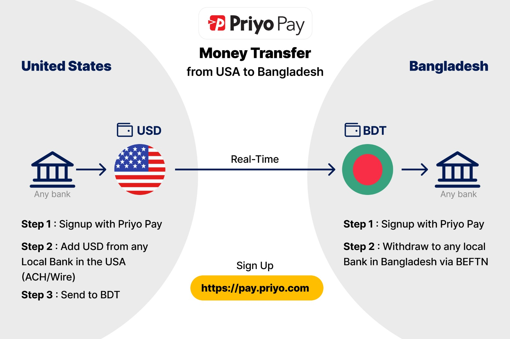

In the rapidly evolving world of freelancing, securing timely and efficient payments is often a significant concern.
Addressing this, Priyo Pay, a digital payment solution tailored specifically for freelancers, has emerged as a game-changer in the industry.
Priyo Pay for Freelancers: A New Era in Digital Payments
What is Priyo Pay?
Priyo Pay is a payment platform designed to simplify the transaction process for freelancers, offering a seamless way to receive payments from clients around the globe.
Whether you're a graphic designer, writer, or developer, Priyo Pay provides a secure,
user-friendly interface to ensure
that your hard-earned money reaches you without unnecessary delays or fees.
Key Features
Low Transaction Fees: Unlike traditional payment methods that can eat into freelancers' earnings with high fees,
Priyo Pay offers competitive rates, ensuring more money stays in your pocket.
Fast Transfers: Time is of the essence in freelancing. Priyo Pay facilitates quicker transactions, allowing
freelancers to access their funds faster than many other payment platforms.
Multi-Currency Support: Freelancers often work with clients from different countries. Priyo Pay supports multiple currencies,
making it easier to manage international payments without the hassle of currency conversion.
Security: With robust security protocols, Priyo Pay ensures that all transactions are secure, protecting both
freelancers and clients from potential fraud.
User-Friendly Interface: Priyo Pay's intuitive design makes it easy for freelancers to manage their payments, track earnings, and
handle transactions with just a few clicks.
Why Choose Priyo Pay?
For freelancers, choosing a payment platform is about more than just moving money;
it's about reliability, efficiency, and peace of mind. Priyo Pay addresses these needs by offering a solution that
understands the unique challenges freelancers face.
Whether you're dealing with different currencies,
looking for lower fees, or simply want a faster way to get paid,
Priyo Pay provides a
tailored solution that helps you focus on your work rather than worrying about payments.